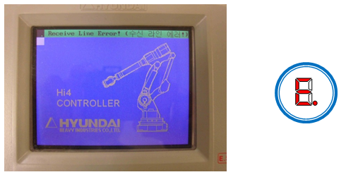
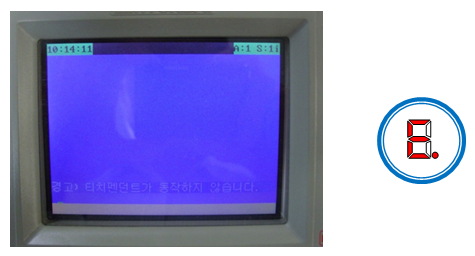
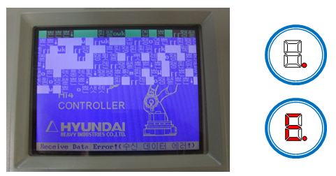
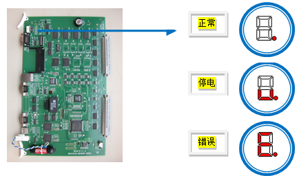
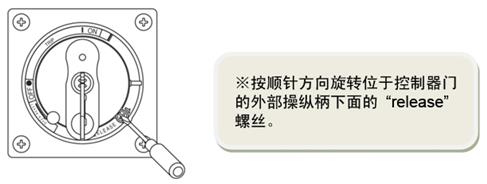

这是因主板(BD412)和示教盒(TP300)之间的通信断开而导致的错误，它将收发数据时所发生的错误信息用不同的方式表达出来，将主板和示教盒的原因区分开来显示在画面上。
(1)请检查下列基本原因。
这是为了检查主板和示教盒之间的连接线是否正常。
1. SMPS的DC24V 输出电压
2. CNRTP 连接器 : E、F(DC24V) – G、H(GND)间的电压
3. CNRTP 连接器连接状态
4. 检查TP Cable 是否受损
(2)通信线异常
“Receive Line Error! (接收线错误!)” & 主板的 7-Seg. à [E.]

TP的初始画面如上图所示时：
▶ 原因
: TP Cable的Receive Data Line 断线 → [CNTP] pin(A、B)
▶ 对策
1. 请更换TP Cable。出现同一现象时，请更换TP300。
2. 出现同一现象时，请更换主板。
3. 同一现象继续出现时，请咨询本司AS人员。
“Receive Data Error! (接收数据错误)” &主板的 7-Seg. à [E.]
或者
警告) “示教盒不运行” & 主板的7-Seg. : [.]

TP的初始画面如上所图所示时：
▶ 原因
- TP Cable的Transmit Data Line 断线 → [CNTP] pin(C、D)
- 主板的Receive Data 异常
▶ 对策
1. 请更换TP Cable。出现同一现象时，请更换TP300。
2. 出现同一现象时，请更换主板。
3. 同一现象继续出现时，请咨询本司AS人员。
“Receive Data Error! (接收数据错误!)” & 主板的7-Seg. à [.] or [E.]

TP的初始画面如上图所示时：
▶ 原因
- TP Cable的Rx/Tx Data Line 连接不良 → [CNTP] pin(A、B、C、D)
- 主板的Transmit Data 异常
▶ 对策
1. 请更换TP Cable。出现同一现象时，请更换TP300。
2. 出现同一现象时，请更换主板。
3. 同一现象持续出现时，请咨询本司AS人员。
l 参考: 主板的7-Segment

在电源投入（通电）的状态下，控制器门被关闭时请开门后确认。具体的开门方法请参考下图。

在通电状态下开门的方法
|
|
注意 对于处于开放状态的控制器，请仅确认主板的状态，请勿触摸其它部位以保障安全。 确认主板为正常状态后必须关闭。 |